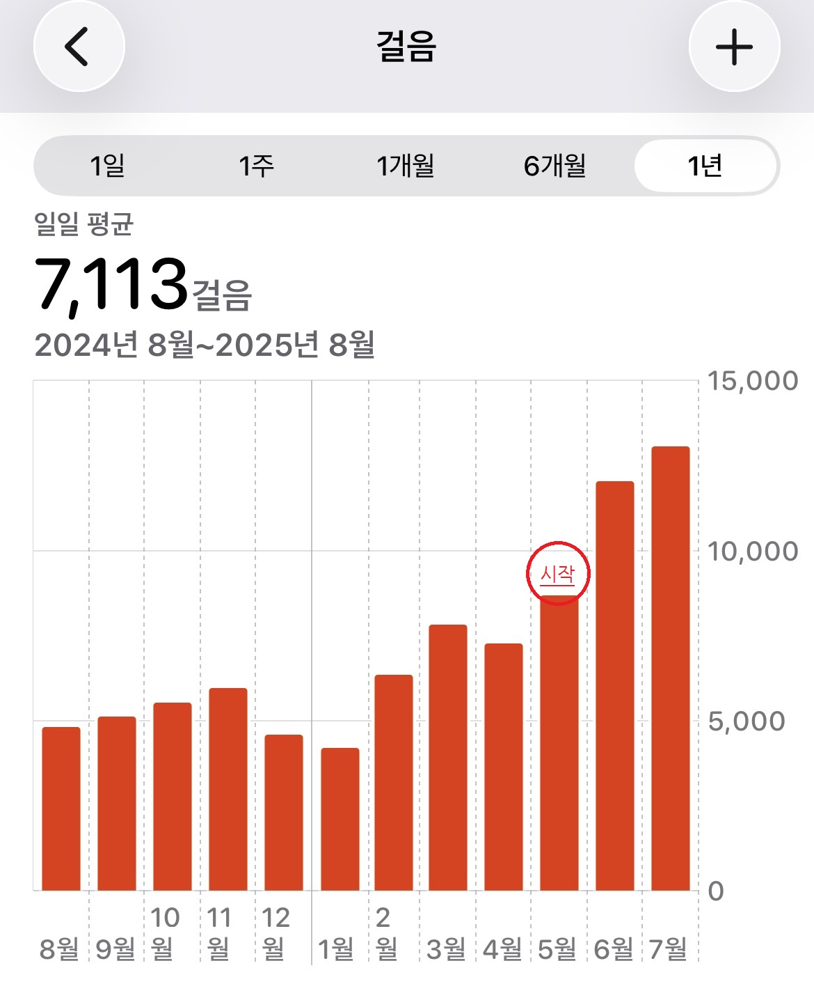
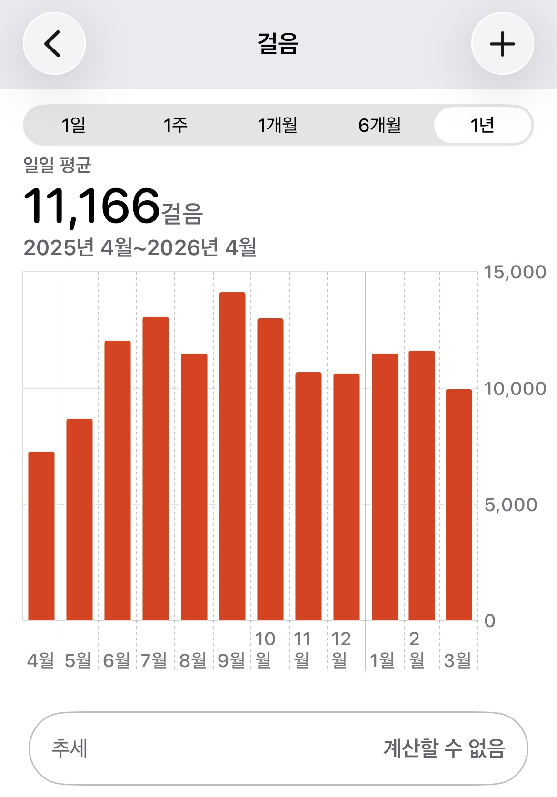
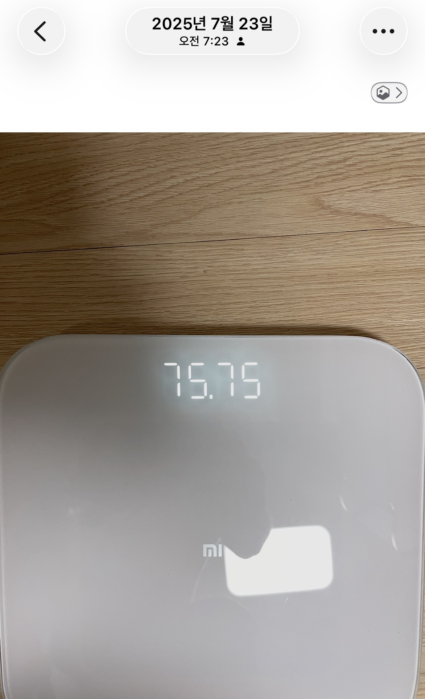
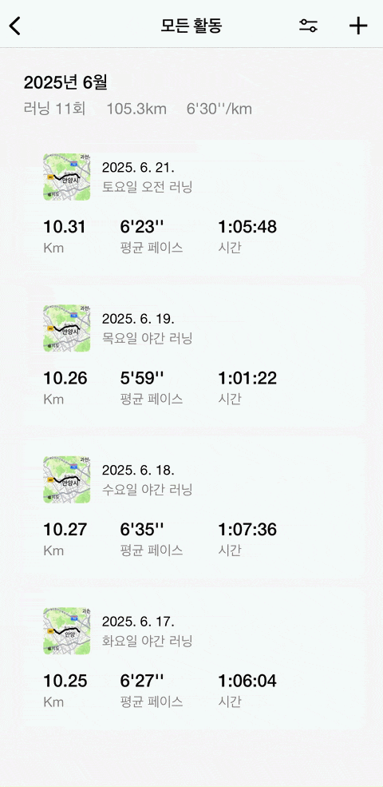
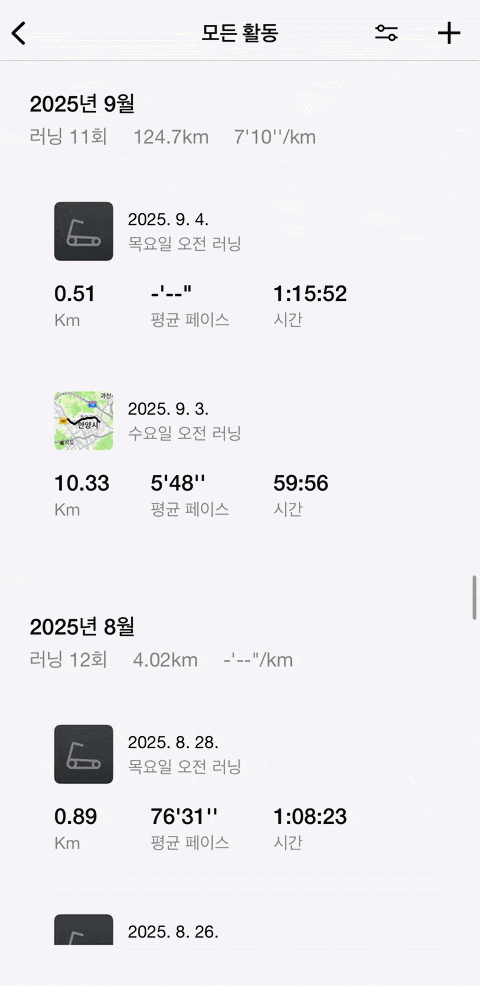
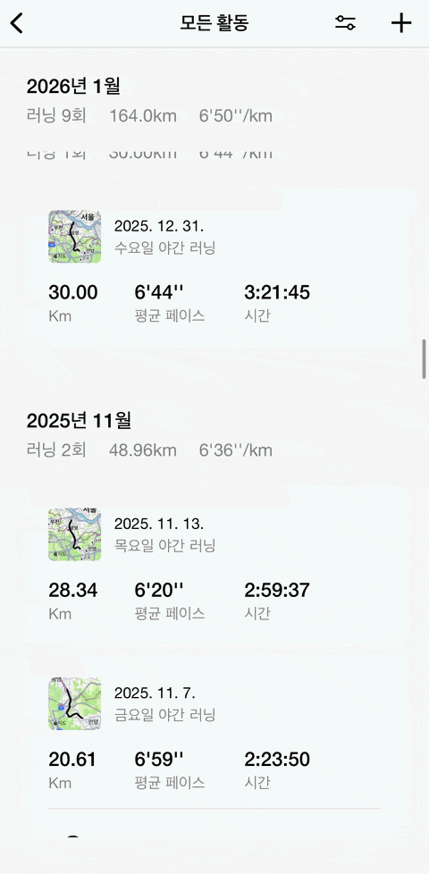

관성의 법칙,
습관의 힘이 만든 제 기록입니다.

5월 중순부터 서서히 올라가기 시작합니다.

하루 평균 5,000걸음이던 사람이
11,166걸음이 되었습니다.
억지로 참아가며 늘린 게 아닙니다.
그저 즐기면서 계획대로, 습관이 생겼을 뿐입니다.

체중계 숫자에 크게 신경쓰지 않았었는데,
어느새 80kg에서 75kg가 되어있었습니다.




아팠던 날도 물론 있었습니다.
그래도 이어진 이유는 의지가 아니라,
제 수준에 맞게 낮춰놓은 습관 덕분이었습니다.